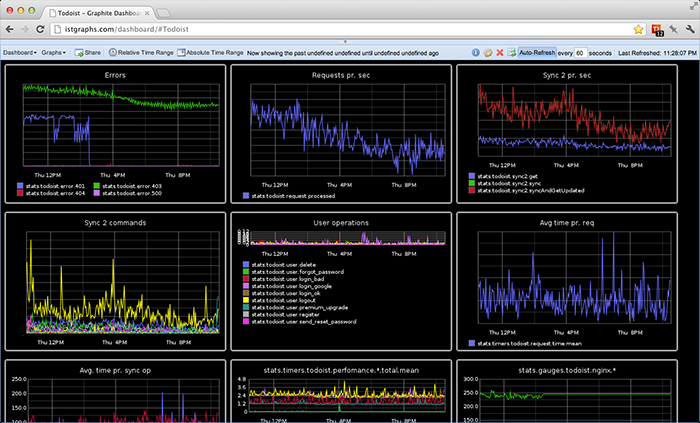
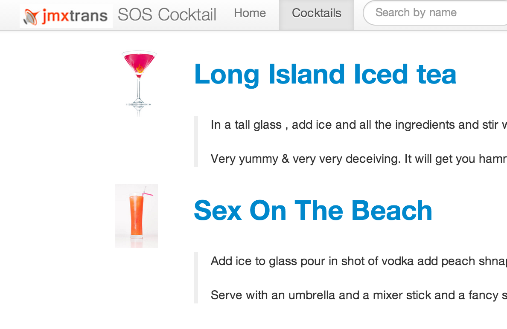
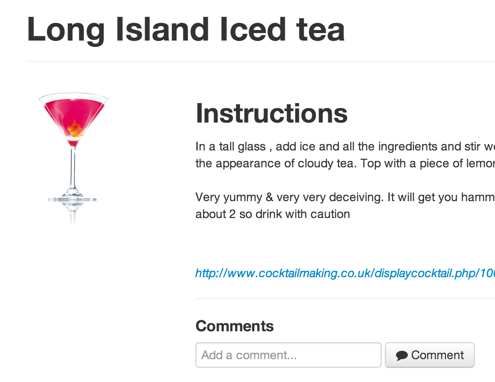

Created by
Antoine / @AMichaud34
Jean-eudes
Benjamin / @benjlacroix
Besoin d'adaptation, de réactivité
Agilité : développements <-> besoins métiers
Intégration & livraison continue : mise en production régulière & de qualité
Gestion environnements : réactivité des outils et performance
Quelles parties métier ?
Quelles parties technique ?
Quelles configurations ?
Quels impacts ?
La mémoire utilisée/libre
Le garbage collector
Nombre de vente
Nombre d'accès
Nombre de recherche
Gains
Scalable & real time graphing
Stockage dans le moteur Carbon
Format par défaut utilisé : format plain text
<metric path> <metric value> <metric timestamp>
PORT=2003
SERVER=graphite.your.org
echo "local.random.diceroll 4 `date +%s`" | nc -q0 ${SERVER} ${PORT}
Configuration JSON
{
"servers": [
{
"queries": [
{
"outputWriters": [
{
"@class": "com.googlecode.jmxtrans.model.output.GraphiteWriter",
"settings": {
"port": 2003,
"host": "mygraphite.mydomain"
}
}
],
"obj": "java.lang:type=OperatingSystem",
"attr": [
"SystemLoadAverage",
"AvailableProcessors",
"TotalPhysicalMemorySize",
"FreePhysicalMemorySize",
"TotalSwapSpaceSize",
"FreeSwapSpaceSize"
]
}
]
}
]
}
Indicateurs sur la JVM & le serveur d'application
Formats de sortie divers
Writer vers les principaux outils de graphes
Il existe des solutions SAAS Hosted Graphite
Alerting dashboard for Graphite
Définissions d'alertes à partir des métriques Graphite
JMXTrans envoyer efficacement tous les métriques à surveiller
Graphite graphes fonctionnels & techniques made easy
Seyren alerting en temps réel
Monitoring d'une application de gestion de cocktails
Hébergement sur Amazon EC2
Graphite

Cocktail Web application & JMXTrans
 
Gatling